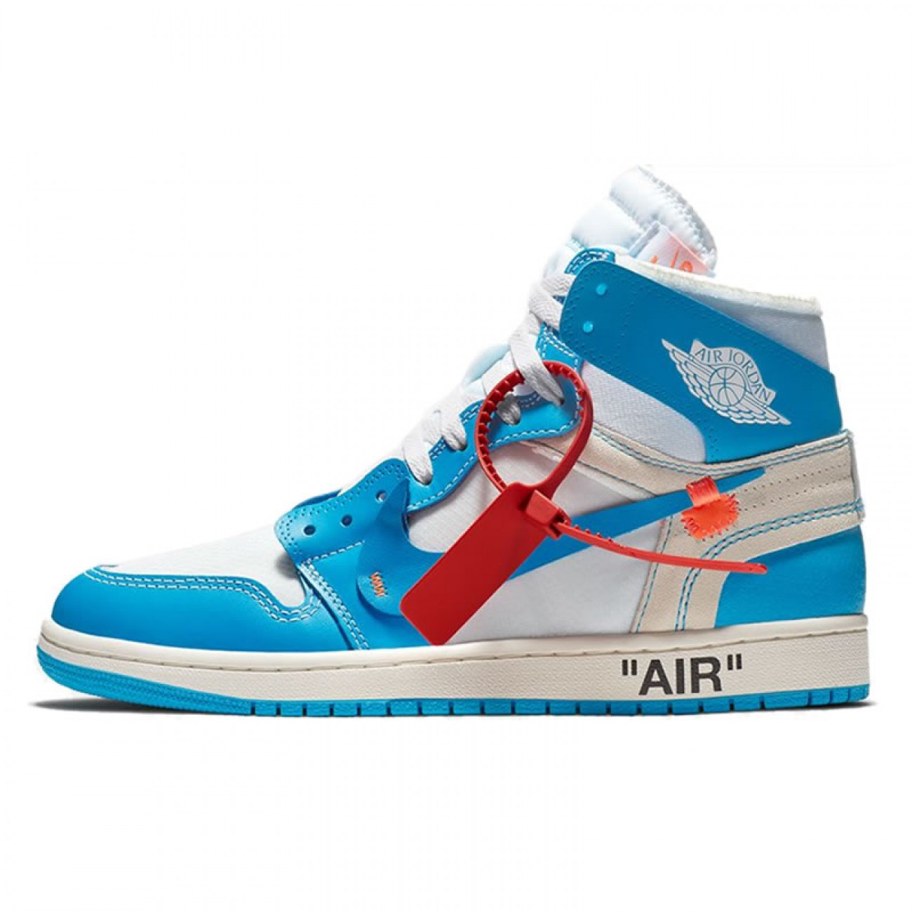

- one
- two
- three
- four
- five
| test 1 |
test 2 |
| test 3 |
test 4 |
| test 5 |
test 6 |
| test 7 |
test 8 |
click here to go to google
Armaan khatris site
about me
hello my name is armaan,
and this is the paragragh
hello my name is armaan, and this is the paragragh
go to seven
one
A paragraph is a series of related sentences developing a central idea, called the topic. Try to think about paragraphs in terms of thematic unity: a paragraph is a sentence or a group of sentences that supports one central, unified idea. Paragraphs add one idea at a time to your broader argument.
two
A paragraph is a series of related sentences developing a central idea, called the topic. Try to think about paragraphs in terms of thematic unity: a paragraph is a sentence or a group of sentences that supports one central, unified idea. Paragraphs add one idea at a time to your broader argument.
three
A paragraph is a series of related sentences developing a central idea, called the topic. Try to think about paragraphs in terms of thematic unity: a paragraph is a sentence or a group of sentences that supports one central, unified idea. Paragraphs add one idea at a time to your broader argument.
four
A paragraph is a series of related sentences developing a central idea, called the topic. Try to think about paragraphs in terms of thematic unity: a paragraph is a sentence or a group of sentences that supports one central, unified idea. Paragraphs add one idea at a time to your broader argument.
five
A paragraph is a series of related sentences developing a central idea, called the topic. Try to think about paragraphs in terms of thematic unity: a paragraph is a sentence or a group of sentences that supports one central, unified idea. Paragraphs add one idea at a time to your broader argument.
six
A paragraph is a series of related sentences developing a central idea, called the topic. Try to think about paragraphs in terms of thematic unity: a paragraph is a sentence or a group of sentences that supports one central, unified idea. Paragraphs add one idea at a time to your broader argument.
A paragraph is a series of related sentences developing a central idea, called the topic. Try to think about paragraphs in terms of thematic unity: a paragraph is a sentence or a group of sentences that supports one central, unified idea. Paragraphs add one idea at a time to your broader argument.
eight
A paragraph is a series of related sentences developing a central idea, called the topic. Try to think about paragraphs in terms of thematic unity: a paragraph is a sentence or a group of sentences that supports one central, unified idea. Paragraphs add one idea at a time to your broader argument.
nine
A paragraph is a series of related sentences developing a central idea, called the topic. Try to think about paragraphs in terms of thematic unity: a paragraph is a sentence or a group of sentences that supports one central, unified idea. Paragraphs add one idea at a time to your broader argument.